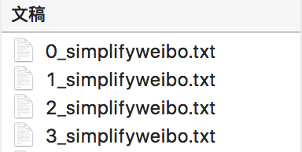

实战案例：微博情感分析
数据：每个文本文件包含相应类的数据

0：喜悦；1：愤怒；2：厌恶；3：低落
步骤
- 文本读取
- 分割训练集、测试集
- 特征提取
- 模型训练、预测
代码：
tools.py
# -*- coding: utf-8 -*-
import re
import jieba.posseg as pseg
import pandas as pd
import math
import numpy as np
# 加载常用停用词
stopwords1 = [line.rstrip() for line in open('./中文停用词库.txt', 'r', encoding='utf-8')]
# stopwords2 = [line.rstrip() for line in open('./哈工大停用词表.txt', 'r', encoding='utf-8')]
# stopwords3 = [line.rstrip() for line in open('./四川大学机器智能实验室停用词库.txt', 'r', encoding='utf-8')]
# stopwords = stopwords1 + stopwords2 + stopwords3
stopwords = stopwords1
def proc_text(raw_line):
"""
处理每行的文本数据
返回分词结果
"""
# 1. 使用正则表达式去除非中文字符
filter_pattern = re.compile('[^\u4E00-\u9FD5]+')
chinese_only = filter_pattern.sub('', raw_line)
# 2. 结巴分词+词性标注
words_lst = pseg.cut(chinese_only)
# 3. 去除停用词
meaninful_words = []
for word, flag in words_lst:
# if (word not in stopwords) and (flag == 'v'):
# 也可根据词性去除非动词等
if word not in stopwords:
meaninful_words.append(word)
return ' '.join(meaninful_words)
def split_train_test(text_df, size=0.8):
"""
分割训练集和测试集
"""
# 为保证每个类中的数据能在训练集中和测试集中的比例相同，所以需要依次对每个类进行处理
train_text_df = pd.DataFrame()
test_text_df = pd.DataFrame()
labels = [0, 1, 2, 3]
for label in labels:
# 找出label的记录
text_df_w_label = text_df[text_df['label'] == label]
# 重新设置索引，保证每个类的记录是从0开始索引，方便之后的拆分
text_df_w_label = text_df_w_label.reset_index()
# 默认按80%训练集，20%测试集分割
# 这里为了简化操作，取前80%放到训练集中，后20%放到测试集中
# 当然也可以随机拆分80%，20%（尝试实现下DataFrame中的随机拆分）
# 该类数据的行数
n_lines = text_df_w_label.shape[0]
split_line_no = math.floor(n_lines * size)
text_df_w_label_train = text_df_w_label.iloc[:split_line_no, :]
text_df_w_label_test = text_df_w_label.iloc[split_line_no:, :]
# 放入整体训练集，测试集中
train_text_df = train_text_df.append(text_df_w_label_train)
test_text_df = test_text_df.append(text_df_w_label_test)
train_text_df = train_text_df.reset_index()
test_text_df = test_text_df.reset_index()
return train_text_df, test_text_df
def get_word_list_from_data(text_df):
"""
将数据集中的单词放入到一个列表中
"""
word_list = []
for _, r_data in text_df.iterrows():
word_list += r_data['text'].split(' ')
return word_list
def extract_feat_from_data(text_df, text_collection, common_words_freqs):
"""
特征提取
"""
# 这里只选择TF-IDF特征作为例子
# 可考虑使用词频或其他文本特征作为额外的特征
n_sample = text_df.shape[0]
n_feat = len(common_words_freqs)
common_words = [word for word, _ in common_words_freqs]
# 初始化
X = np.zeros([n_sample, n_feat])
y = np.zeros(n_sample)
print('提取特征...')
for i, r_data in text_df.iterrows():
if (i + 1) % 5000 == 0:
print('已完成{}个样本的特征提取'.format(i + 1))
text = r_data['text']
feat_vec = []
for word in common_words:
if word in text:
# 如果在高频词中，计算TF-IDF值
tf_idf_val = text_collection.tf_idf(word, text)
else:
tf_idf_val = 0
feat_vec.append(tf_idf_val)
# 赋值
X[i, :] = np.array(feat_vec)
y[i] = int(r_data['label'])
return X, y
def cal_acc(true_labels, pred_labels):
"""
计算准确率
"""
n_total = len(true_labels)
correct_list = [true_labels[i] == pred_labels[i] for i in range(n_total)]
acc = sum(correct_list) / n_total
return acc
main.py
# main.py
# -*- coding: utf-8 -*-
import os
import pandas as pd
import nltk
from tools import proc_text, split_train_test, get_word_list_from_data, \
extract_feat_from_data, cal_acc
from nltk.text import TextCollection
from sklearn.naive_bayes import GaussianNB
dataset_path = './dataset'
text_filenames = ['0_simplifyweibo.txt', '1_simplifyweibo.txt',
'2_simplifyweibo.txt', '3_simplifyweibo.txt']
# 原始数据的csv文件
output_text_filename = 'raw_weibo_text.csv'
# 清洗好的文本数据文件
output_cln_text_filename = 'clean_weibo_text.csv'
# 处理和清洗文本数据的时间较长，通过设置is_first_run进行配置
# 如果是第一次运行需要对原始文本数据进行处理和清洗，需要设为True
# 如果之前已经处理了文本数据，并已经保存了清洗好的文本数据，设为False即可
is_first_run = True
def read_and_save_to_csv():
"""
读取原始文本数据，将标签和文本数据保存成csv
"""
text_w_label_df_lst = []
for text_filename in text_filenames:
text_file = os.path.join(dataset_path, text_filename)
# 获取标签，即0, 1, 2, 3
label = int(text_filename[0])
# 读取文本文件
with open(text_file, 'r', encoding='utf-8') as f:
lines = f.read().splitlines()
labels = [label] * len(lines)
text_series = pd.Series(lines)
label_series = pd.Series(labels)
# 构造dataframe
text_w_label_df = pd.concat([label_series, text_series], axis=1)
text_w_label_df_lst.append(text_w_label_df)
result_df = pd.concat(text_w_label_df_lst, axis=0)
# 保存成csv文件
result_df.columns = ['label', 'text']
result_df.to_csv(os.path.join(dataset_path, output_text_filename),
index=None, encoding='utf-8')
def run_main():
"""
主函数
"""
# 1. 数据读取，处理，清洗，准备
if is_first_run:
print('处理清洗文本数据中...', end=' ')
# 如果是第一次运行需要对原始文本数据进行处理和清洗
# 读取原始文本数据，将标签和文本数据保存成csv
read_and_save_to_csv()
# 读取处理好的csv文件，构造数据集
text_df = pd.read_csv(os.path.join(dataset_path, output_text_filename),
encoding='utf-8')
# 处理文本数据
text_df['text'] = text_df['text'].apply(proc_text)
# 过滤空字符串
text_df = text_df[text_df['text'] != '']
# 保存处理好的文本数据
text_df.to_csv(os.path.join(dataset_path, output_cln_text_filename),
index=None, encoding='utf-8')
print('完成，并保存结果。')
# 2. 分割训练集、测试集
print('加载处理好的文本数据')
clean_text_df = pd.read_csv(os.path.join(dataset_path, output_cln_text_filename),
encoding='utf-8')
# 分割训练集和测试集
train_text_df, test_text_df = split_train_test(clean_text_df)
# 查看训练集测试集基本信息
print('训练集中各类的数据个数：', train_text_df.groupby('label').size())
print('测试集中各类的数据个数：', test_text_df.groupby('label').size())
# 3. 特征提取
# 计算词频
n_common_words = 200
# 将训练集中的单词拿出来统计词频
print('统计词频...')
all_words_in_train = get_word_list_from_data(train_text_df)
fdisk = nltk.FreqDist(all_words_in_train)
common_words_freqs = fdisk.most_common(n_common_words)
print('出现最多的{}个词是：'.format(n_common_words))
for word, count in common_words_freqs:
print('{}: {}次'.format(word, count))
print()
# 在训练集上提取特征
text_collection = TextCollection(train_text_df['text'].values.tolist())
print('训练样本提取特征...', end=' ')
train_X, train_y = extract_feat_from_data(train_text_df, text_collection, common_words_freqs)
print('完成')
print()
print('测试样本提取特征...', end=' ')
test_X, test_y = extract_feat_from_data(test_text_df, text_collection, common_words_freqs)
print('完成')
# 4. 训练模型Naive Bayes
print('训练模型...', end=' ')
gnb = GaussianNB()
gnb.fit(train_X, train_y)
print('完成')
print()
# 5. 预测
print('测试模型...', end=' ')
test_pred = gnb.predict(test_X)
print('完成')
# 输出准确率
print('准确率：', cal_acc(test_y, test_pred))
if __name__ == '__main__':
run_main()